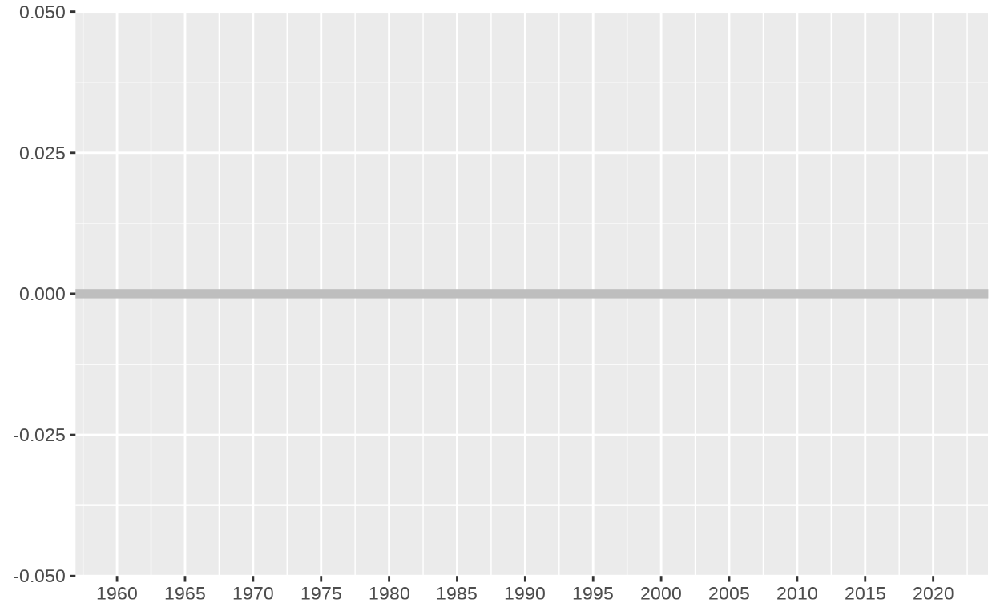
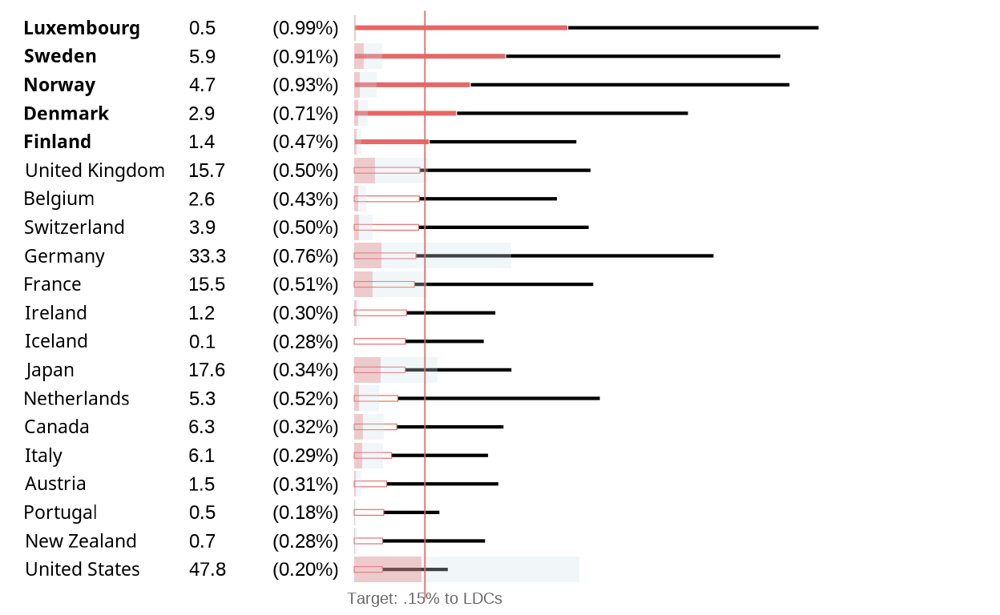
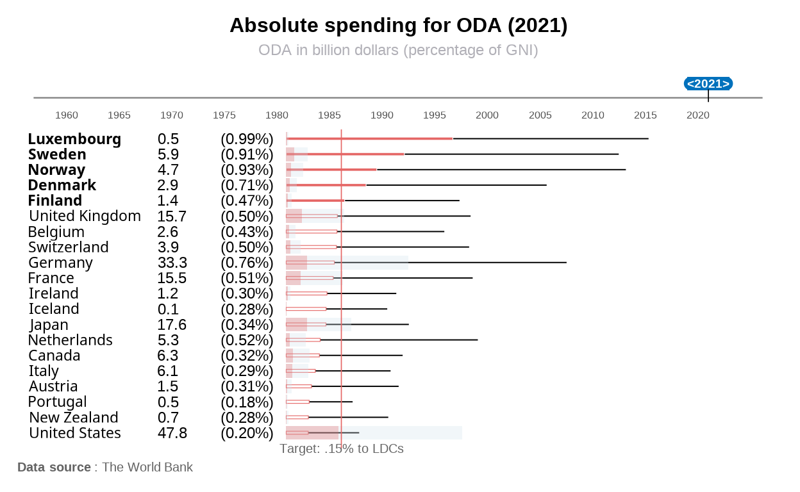
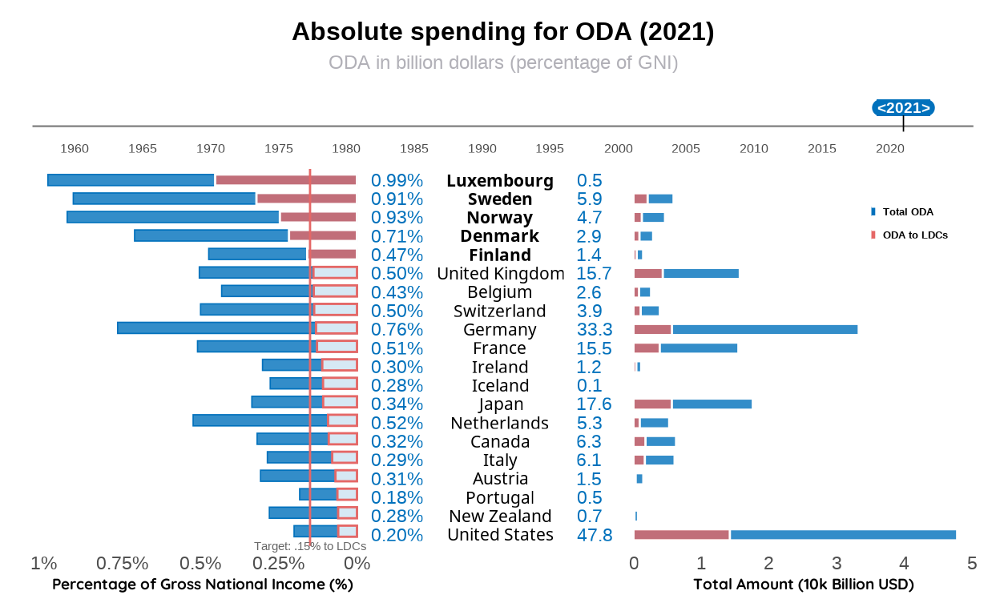

The SDG Target appeals to the revitalization of the global partnership for development, where the official development assistance (ODA) plays a crucial role. The target 17.2 expects “the commitment by many developed countries to achieve the target of 0.7 per cent of gross national income for official development assistance (ODA/GNI) to developing countries and 0.15 to 0.20 per cent of ODA/GNI to least developed countries” (The World Bank, 2024). This graph from The World Bank visualizes the performance of the first 20 countries which contribute most on ODA.

The aim of this tutorial is to reproduce the chart and propose some alternative visualizations using the same dataset.
library(ggplot2)
library(ggtext)
library(tidyverse)
library(grid)
library(countrycode)
library(showtext)
library(ggforce)
library(patchwork)
sysfonts::font_add_google("Noto Sans", family="Noto Sans Regular")
sysfonts::font_add_google("Noto Sans", family="Noto Sans Bold", regular.wt=700)
showtext_auto()Getting and cleaning data
All the data needed for this map can be downloaded directly from The World Bank by this link. They provide a complete data set with the spending on ODA of every country from 1960 to 2021, and especially, since 1970, they have the data of total ODA and ODA to LDCs (Least Developed Countries) separately. Let’s take a glimpse of the data:
Rows: 1,582
Columns: 14
$ iso3 <chr> "AUT", "AUT", "AUT", "AUT", "…
$ year <int> 1960, 1961, 1962, 1963, 1964,…
$ viz_oda_usdmn <dbl> 1.53660, 42.45602, 32.30225, …
$ viz_oda_usdmn_nom <dbl> 0.10, 2.90, 2.30, 4.20, 6.60,…
$ viz_gni_constant <dbl> 96498.48, 101748.10, 103929.0…
$ viz_odagni_pct <dbl> 0.001592, 0.041727, 0.031081,…
$ viz_odamn_covid <dbl> 0, 0, 0, 0, 0, 0, 0, 0, 0, 0,…
$ viz_odamn_refugees <dbl> 0, 0, 0, 0, 0, 0, 0, 0, 0, 0,…
$ viz_oda_ukr <int> 0, 0, 0, 0, 0, 0, 0, 0, 0, 0,…
$ viz_oda_usdmn_nocovid <dbl> 1.53660, 42.45602, 32.30225, …
$ viz_oda_usdmn_nocovid_noref <dbl> 1.53660, 42.45602, 32.30225, …
$ viz_oda_usdmn_nocovid_norefukr <dbl> 1.53660, 42.45602, 32.30225, …
$ viz_oda_ldc_pctgni <dbl> NA, NA, NA, NA, NA, NA, NA, N…
$ viz_oda_ldc_usdmn <dbl> NA, NA, NA, NA, NA, NA, NA, N…summary(oda_data) iso3 year viz_oda_usdmn
Length:1582 Min. :1960 Min. : 0.59
Class :character 1st Qu.:1980 1st Qu.: 362.38
Mode :character Median :1996 Median : 1722.91
Mean :1994 Mean : 7191.88
3rd Qu.:2010 3rd Qu.: 4865.17
Max. :2022 Max. :211319.70
NA's :7
viz_oda_usdmn_nom viz_gni_constant viz_odagni_pct
Min. : 0.1 Min. : 0 Min. :0.00159
1st Qu.: 134.2 1st Qu.: 176106 1st Qu.:0.18834
Median : 802.3 Median : 412387 Median :0.30915
Mean : 4951.7 Mean : 2419102 Mean :0.37741
3rd Qu.: 3161.9 3rd Qu.: 1428197 3rd Qu.:0.48433
Max. :203995.3 Max. :56900000 Max. :1.40455
NA's :7 NA's :45 NA's :53
viz_odamn_covid viz_odamn_refugees viz_oda_ukr
Min. : 0.00 Min. : 0.00 Min. : 0.00
1st Qu.: 0.00 1st Qu.: 0.00 1st Qu.: 0.00
Median : 0.00 Median : 0.00 Median : 0.00
Mean : 58.63 Mean : 231.12 Mean : 10.76
3rd Qu.: 0.00 3rd Qu.: 34.71 3rd Qu.: 0.00
Max. :21879.01 Max. :30095.44 Max. :16100.00
viz_oda_usdmn_nocovid viz_oda_usdmn_nocovid_noref
Min. : 0.59 Min. : 0.59
1st Qu.: 361.07 1st Qu.: 347.98
Median : 1722.91 Median : 1697.07
Mean : 7132.99 Mean : 6900.84
3rd Qu.: 4862.31 3rd Qu.: 4691.09
Max. :199297.30 Max. :169201.80
NA's :7 NA's :7
viz_oda_usdmn_nocovid_norefukr viz_oda_ldc_pctgni viz_oda_ldc_usdmn
Min. : 0.59 Min. :0.0019 Min. : 0.92
1st Qu.: 347.98 1st Qu.:0.0501 1st Qu.: 165.72
Median : 1697.07 Median :0.0921 Median : 721.54
Mean : 6890.04 Mean :0.1265 Mean : 2290.24
3rd Qu.: 4691.09 3rd Qu.:0.1617 3rd Qu.: 1605.13
Max. :154931.20 Max. :0.5206 Max. :49824.68
NA's :7 NA's :411 NA's :407 Since the chart only shows the first 20 countries with the highest proportion ODA/GNI to LDCs (Least Developed Countries) and I take the year 2021 as an example of static map, I select this specific subset of the data to compute the chart. Moreover, I have to eliminate the data of “DAC”, as it is not a specific country, but an organization called “Development Assistance Committee”, including 32 members. I also renamed some columns, whose names were not easy to understand. Finally, as the countries are coded in “iso3c” format, I use the package countrycode to decode them into complete country names.
selected_year <- 2021
oda_filtered <- oda_data |>
filter(year == selected_year & iso3 != "DAC") |>
mutate(
country_label = countrycode(iso3, "iso3c", "country.name")
) |>
select(country = country_label, oda_total = viz_oda_usdmn,
oda_pct_gni = viz_odagni_pct,
oda_ldc_total = viz_oda_ldc_usdmn,
oda_ldc_pct_gni = viz_oda_ldc_pctgni) |>
drop_na() |>
arrange(desc(oda_ldc_pct_gni)) |>
slice(1:20)
oda_filtered$country <- factor(oda_filtered$country,
levels = oda_filtered$country[order(oda_filtered$oda_ldc_pct_gni)])
summary(oda_filtered) country oda_total oda_pct_gni
United States: 1 Min. : 70.84 Min. :0.1832
New Zealand : 1 1st Qu.: 1369.64 1st Qu.:0.2980
Portugal : 1 Median : 4292.50 Median :0.4532
Austria : 1 Mean : 8673.87 Mean :0.4867
Italy : 1 3rd Qu.: 8603.46 3rd Qu.:0.5704
Canada : 1 Max. :47804.80 Max. :0.9879
(Other) :14
oda_ldc_total oda_ldc_pct_gni
Min. : 27.71 Min. :0.05985
1st Qu.: 400.09 1st Qu.:0.08747
Median : 1001.73 Median :0.11935
Mean : 2308.77 Mean :0.14552
3rd Qu.: 2549.22 3rd Qu.:0.14406
Max. :14235.94 Max. :0.45326
Building the chart
The chart could be seen as a composition of two graphs, the timeline for selecting years and the barplots below.
Titles and the timeline
First of all, I need to create a timeline from 1960 to 2021, with the breaks for each 5 years.
year_axis_plot <- ggplot() +
geom_hline(yintercept = 0, color = "gray", size = 2) +
scale_x_continuous(limits = c(1960, 2021), breaks = seq(1960, 2020, by = 5))
year_axis_plot
Then, I will change the theme into minimal to remove the grey background, I need to remove the labels on the y-axis, and make the year numbers close to the x-axis by flattening the graph with the function coord_fixed().
year_axis_plot <- year_axis_plot +
coord_cartesian(clip = "off") +
geom_hline(yintercept = 0, color = "gray50", size = 0.5, inherit.aes = FALSE) +
scale_x_continuous(limits = c(1960, 2023), breaks = seq(1960, 2020, by = 5)) +
theme_minimal() +
theme(
axis.text.y = element_blank(),
axis.ticks.y = element_blank(),
panel.grid = element_blank(),
axis.title = element_blank(),
plot.margin = margin(10, 5, 5, 5)
) +
coord_fixed(ratio = 0.1)
year_axis_plotNext step would be add the label of the selected year, 2021, with a blue background of a special figure similar to an rectangle or ellipse. I will draw an rectangle and two circles on each side to replicate that figure. There is also a vertical line connecting the label of 2021 and the timeline.
year_axis_plot1 <- ggplot() +
coord_cartesian(clip = "off") +
geom_hline(yintercept = 0, color = "gray50", size = 0.4, inherit.aes = FALSE) +
scale_x_continuous(limits = c(1960, 2023), breaks = seq(1960, 2020, by = 5)) +
geom_rect(aes(xmin = 2019, xmax = 2023, ymin = 9, ymax = 25),
fill = "#0171bc", inherit.aes = FALSE ) +
annotate("point", x = 2019.3, y = 17, size = 3, color = "#0171bc", fill = "#0171bc", shape = 21)+
annotate("point", x = 2022.7, y = 17, size = 3, color = "#0171bc", fill = "#0171bc", shape = 21)+
geom_segment(aes(x = 2021, xend = 2021, y = -5, yend = 10),
color = "black", size = 0.3, inherit.aes = FALSE) +
annotate("text", x = 2021, y = 17, label = "<2021>", color = "white",
size = 2.5, fontface = "bold", hjust = 0.5) +
theme_minimal() +
theme(
axis.text.x = element_text(size = 6),
axis.text.y = element_blank(),
axis.ticks.y = element_blank(),
panel.grid = element_blank(),
axis.title = element_blank(),
plot.margin = margin(5, 5, 0, 5)
) +
coord_fixed(ratio = 0.08)
year_axis_plot1Finally, I will add the title and subtitle with the free font closest to the original font with the function annotate().
sysfonts::font_add_google("Quicksand", family="Quicksand")
showtext::showtext_auto()
p1 <- year_axis_plot1 +
labs(
title = "Absolute spending for ODA (2021)",
subtitle = "ODA in billion dollars (percentage of GNI)"
) +
theme(
plot.title = element_text(size = 12, face = "bold", hjust = 0.5, margin = margin(b = 5)),
plot.subtitle = element_text(size = 9, color = "#b1b0b7", hjust = 0.5, margin = margin(b = 10))
)
p1Bar plots
Next, let’s build the bar plots step by step. First of all, the first level should be the thin black and red bar plots, which represents the proportion Total ODA/GNI and ODA to LDCs / GNI. Besides, the red bar plot should be hollow, that is, with red outlines and white filler color, while the proportion ODA to LDCs / GNI falls short of the 0.15% target. The countries’ names should be in bold in the same situation. To achieve this, we need to create a few columns in the data set to specify the color, the fill and the font for each country. Finally, I need to scale up these percentages by a thousand times to be visible after adding the absolute ODA values later.
oda_filtered <- oda_filtered %>%
mutate(
value_label = sprintf("%.1f", oda_total / 1000),
pct_label = paste0("(", sprintf("%.2f", oda_pct_gni), "%)"),
font_weight = ifelse(oda_ldc_pct_gni >= 0.15, "bold", "plain"),
fill = ifelse(oda_ldc_pct_gni >= 0.15, "#e56766", "white"),
color = ifelse(oda_ldc_pct_gni >= 0.15, "white", "#e56766"),
)
oda_filtered$country <- factor(oda_filtered$country,
levels = oda_filtered$country[order(oda_filtered$oda_ldc_pct_gni)])sysfonts::font_add_google("Noto Sans", family="Noto Sans Regular")
sysfonts::font_add_google("Noto Sans", family="Noto Sans Bold", regular.wt=700)
showtext_auto()
barplot<- ggplot(oda_filtered) +
geom_col(aes(x = oda_pct_gni * 100000, y = country),
fill = "black", color="white", width = 0.2) +
geom_col(aes(x = oda_ldc_pct_gni * 100000, y = country),
fill = oda_filtered$fill, color = oda_filtered$color, width = 0.2, size=0.2)+
geom_text(aes(x = -35000, y = country, label = value_label),
hjust = 0, size = 3.2, family = "sans") +
geom_text(aes(x = -3500, y = country, label = pct_label),
hjust = 1, size = 3.2, family = "sans") +
geom_text(
data = subset(oda_filtered, font_weight == "plain"),
aes(x = -70000, y = country, label = country),
fontface = "plain", hjust = 0, size = 3, family = "Noto Sans Regular"
) +
geom_text(
data = subset(oda_filtered, font_weight == "bold"),
aes(x = -70000, y = country, label = country),
hjust = 0, size = 3, family = "Noto Sans Bold"
) +
labs(
title = NULL,
subtitle = NULL,
x = NULL,
y = NULL
) +
scale_x_continuous(expand = expansion(mult = c(0.01, 0.2))) +
theme_minimal() +
theme(
axis.text.y = element_blank(),
axis.text.x = element_blank(),
plot.title = NULL,
plot.subtitle = NULL,
panel.grid.major.y = element_blank(),
panel.grid.major.x = element_blank(),
panel.grid.minor.x = element_blank(),
plot.margin = margin(5, 10, 5, 5)
)
barplotThen, we will add these blue and red transparent thick bar plots, which represent the absolute amount of ODA, and ODA to LDCs of theses countries, and after that, a red vertical line to mark up the 0.15% target.
p2<- barplot+
geom_bar(aes(x = oda_total, y = country), stat = "identity", fill = "#d2e3ea", alpha = 0.3) +
geom_bar(aes(x = oda_ldc_total, y = country), stat = "identity", fill = "#e56766", alpha = 0.3) +
geom_vline(xintercept = 0.15 * 100000, color = "#e56766", size= 0.3) +
annotate("text", x = 0.15 * 100000, y = -0.02, label = "Target: .15% to LDCs",
color = "gray40", size = 2.6, hjust = 0.5, family = "sans")+
coord_cartesian(clip = "off")
p2
Final Result
Finally, we need to joint vertically these two plots in a proper proportion, and then I will add an external caption to specify the data source, although the original graph didn’t contain it:
final_plot <- p1 / p2 +
plot_layout(heights = c(0.8, 9.2))
caption_rep <- "**Data source** : The World Bank"
final_plot<- final_plot +
labs(caption = caption_rep)+
theme(plot.caption = element_markdown(size = 7.5,
color = "#636363",
hjust = 0),
plot.caption.position = "plot")
final_plot
Alternative visualization
The original graph is very difficult to interpret, because it includes a lot of information — combining the percentages with the total amounts, as well as total ODA with ODA to LDCs, and then the x-axis lost its purpose. When the percentages were scaled up, the x-axis could no longer show any specific numbers, and the length of the bars was just used for sorting.
My alternative visualization was to separate the percentage and total amounts, so that the x-axis could once again show meaningful values, and the length of the bars would correspond to actual numbers, making the graph easier to read. I also added a legend to explain the different colors and their meanings. I hope this will help the readers understand the graph more easily.
# Adjust the mapping in p_left and p_right
p_left <- ggplot(oda_filtered) +
geom_col(aes(x = -oda_pct_gni, y = country),
fill = "#0171bc", color="#0171bc", width = 0.6, alpha = 0.8, size=0.3) +
geom_col(aes(x = -oda_ldc_pct_gni, y = country),
fill = oda_filtered$fill, color = oda_filtered$color,
width = 0.6, alpha = 0.8, size=0.5) +
geom_vline(xintercept = -0.15 , color = "#e56766", size = 0.5) +
annotate("text", x = -0.15, y = 0.2, label = "Target: .15% to LDCs",
color = "gray40", size = 2, hjust = 0.5, family = "sans") +
coord_cartesian(clip = "off")+
scale_x_continuous(
breaks = seq(-1, 0, by = 0.25),
labels = function(x) paste0(abs(x), "%")
) +
labs(x = "Percentage of Gross National Income (%)", y = NULL) +
theme_minimal() +
theme(
axis.text.y = element_blank(),
axis.ticks.y = element_blank(),
panel.grid.major = element_blank(),
panel.grid.minor = element_blank(),
plot.margin = margin(5, 0, 5, 7),
axis.title.x = element_text(
family = "Quicksand", # Font setting
size = 7, # Font size
face = "bold", # Bold font
color = "black" # Font color
)
) +
scale_y_discrete()
# Legend: Total ODA and ODA to LDCs
p_legend <- ggplot() +
annotation_custom(grob = rectGrob(gp = gpar(fill = "#0171bc",
col = "white")),
xmin = -0.1, xmax = 0, ymin = 0.7, ymax = 0.9) +
annotation_custom(grob = textGrob("Total ODA",
gp = gpar(fontsize = 5,
fontface = "bold", col = "black"),
hjust = 0),
xmin = 0.05, xmax = 0.1, ymin = 0.7, ymax = 0.9) +
annotation_custom(grob = rectGrob(gp = gpar(fill = "#e56766",
col = "white")),
xmin = -0.1, xmax = 0, ymin = 0.2, ymax = 0.4) +
annotation_custom(grob = textGrob("ODA to LDCs",
gp = gpar(fontsize = 5,
fontface = "bold",
col = "black"),
hjust = 0),
xmin = 0.05, xmax = 0.1, ymin = 0.2, ymax = 0.4) +
coord_cartesian(clip = "off") +
theme_void() + # Remove all background
theme(plot.margin = margin(0, 0, 0, 0)) + # Adjust plot margins
coord_fixed(ratio = 0.5)
# Adjust the right barplot
p_right <- ggplot(oda_filtered) +
geom_col(aes(x = oda_total, y = country),
fill = "#0171bc", color = "white", width = 0.6, alpha = 0.8) +
geom_col(aes(x = oda_ldc_total, y = country),
fill = "#e56766", color = "white", width = 0.6, alpha = 0.8) +
scale_x_continuous(
expand = expansion(mult = c(0, 0.05)),
labels = function(x) x / 10000 # Convert to scaled units
) +
labs(x = "Total Amount (10k Billion USD)", y = NULL) + # Adjusted title
theme_minimal() +
theme(
axis.text.y = element_blank(),
axis.ticks.y = element_blank(),
panel.grid.major = element_blank(),
panel.grid.minor = element_blank(),
axis.title.x = element_text(
family = "Quicksand", # Font setting
size = 7, # Font size
face = "bold", # Bold font
color = "black" # Font color
),
plot.margin = margin(5, 7, 5, 0)
) +
scale_y_discrete() +
inset_element(p_legend, left = 0.7, bottom = 0.7, right = 1, top = 1)
# Centered labels: country, percentage, and total amount
p_middle <- ggplot(oda_filtered) +
geom_text(aes(x = -0.1, y = country, label = paste0(sprintf("%.2f", oda_pct_gni), "%")),
size = 3, hjust = 1, color = "#0171bc") +
geom_text(aes(x = 0.1, y = country, label = sprintf("%.1f", oda_total / 1000)),
size = 3, hjust = 0, color = "#0171bc") +
# Plain font labels
geom_text(
data = subset(oda_filtered, font_weight == "plain"),
aes(x = 0, y = country, label = country),
fontface = "plain", hjust = 0.5, size = 2.8, family = "Noto Sans Regular"
) +
# Bold font labels
geom_text(
data = subset(oda_filtered, font_weight == "bold"),
aes(x = 0, y = country, label = country),
hjust = 0.5, size = 2.8, family = "Noto Sans Bold"
) +
coord_cartesian(clip = "off") +
theme_void() + # No background and grid
theme(
plot.margin = margin(0, 20, 0, 20)
)
# Combine all plots
p2_2 <- p_left + p_middle + p_right +
plot_layout(widths = c(4, 2, 4))
final_plot_v2 <- p1 / p2_2 +
plot_layout(heights = c(1, 9))final_plot_v2
Interactive visualization
Finally, I used the shiny package to produce an interactive graph.
library(shiny)
library(ggplot2)
library(tidyverse)
library(countrycode)
library(showtext)
library(patchwork)
# Add custom fonts
sysfonts::font_add_google("Noto Sans", family="Noto Sans Regular")
sysfonts::font_add_google("Noto Sans", family="Noto Sans Bold", regular.wt=700)
# Enable showtext
showtext_auto()
# Read data
oda_data <- read.csv("goal17.oda.csv")
ui <- fluidPage(
titlePanel("Abosolute Spending for ODA"),
sidebarLayout(
sidebarPanel(
sliderInput("selected_year", "Select Year:",
min = 1970, max = 2021,
value = max(oda_data$year), step = 1, sep = "")
),
mainPanel(
uiOutput("dynamicPlotUI")
)
)
)
server <- function(input, output, session) {
output$dynamicPlotUI <- renderUI({
selected_year <- input$selected_year
oda_filtered <- oda_data |>
filter(year == selected_year & iso3 != "DAC") |>
drop_na() |>
slice(1:20)
height_per_row <- 30
plot_height <- max(nrow(oda_filtered) * height_per_row, 800)
plotOutput("odaPlot", height = paste0(plot_height, "px"))
})
output$odaPlot <- renderPlot({
selected_year <- input$selected_year
oda_filtered <- oda_data |>
filter(year == selected_year & iso3 != "DAC") |>
mutate(
country_label = countrycode(iso3, "iso3c", "country.name")
) |>
arrange(desc(viz_oda_ldc_pctgni)) |>
select(country = country_label, oda_total = viz_oda_usdmn,
oda_pct_gni = viz_odagni_pct,
oda_ldc_total = viz_oda_ldc_usdmn,
oda_ldc_pct_gni = viz_oda_ldc_pctgni) |>
drop_na() |>
slice(1:20)
oda_filtered <- oda_filtered %>%
mutate(
value_label = sprintf("%.1f", oda_total / 1000),
pct_label = paste0("(", sprintf("%.2f", oda_pct_gni), "%)"),
font_weight = ifelse(oda_ldc_pct_gni >= 0.15, "bold", "plain"),
fill = ifelse(oda_ldc_pct_gni >= 0.15, "#e56766", "white"),
color = ifelse(oda_ldc_pct_gni >= 0.15, "white", "#e56766")
)
oda_filtered$country <- factor(oda_filtered$country, levels = oda_filtered$country[order(oda_filtered$oda_ldc_pct_gni)])
p_left <- ggplot(oda_filtered) +
geom_col(aes(x = -oda_pct_gni, y = country),
fill = "#0171bc", color="#0171bc", width = 0.4, alpha = 0.8, size=0.3) +
geom_col(aes(x = -oda_ldc_pct_gni, y = country),
fill = oda_filtered$fill, color = oda_filtered$color,
width = 0.4, alpha = 0.8, size=0.5) +
geom_vline(xintercept = -0.15 , color = "#e56766", size = 0.5) +
annotate("text", x = -0.15, y = 0.2, label = "Target: .15% to LDCs",
color = "gray40", size = 6, hjust = 0.5, family = "sans") +
coord_cartesian(clip = "off") +
scale_x_continuous(
breaks = seq(-1, 0, by = 0.25),
labels = function(x) paste0(abs(x), "%")
) +
labs(x = "Percentage of Gross National Income (%)", y = NULL) +
theme_minimal() +
theme(
axis.text.y = element_blank(),
axis.ticks.y = element_blank(),
panel.grid.major = element_blank(),
panel.grid.minor = element_blank(),
plot.margin = margin(5, 0, 5, 7),
panel.spacing = unit(0.05, "lines"),
axis.title.x = element_text(size = 22, face = "bold", color = "black"),
axis.text.x = element_text(size = 20, face = "bold", color = "black")
)
p_right <- ggplot(oda_filtered) +
geom_col(aes(x = oda_total, y = country),
fill = "#0171bc", color = "white", width = 0.4, alpha = 0.8) +
geom_col(aes(x = oda_ldc_total, y = country),
fill = "#e56766", color = "white", width = 0.4, alpha = 0.8) +
scale_x_continuous(
expand = expansion(mult = c(0, 0.05)),
labels = function(x) x / 10000 # Convert to scaled units
) +
labs(x = "Total Amount (10k Billion USD)", y = NULL) + # Adjusted title
theme_minimal() +
theme(
axis.text.y = element_blank(),
axis.ticks.y = element_blank(),
panel.grid.major = element_blank(),
panel.grid.minor = element_blank(),
panel.spacing = unit(0.05, "lines"),
axis.title.x = element_text(
family = "Quicksand", # Font setting
size = 22, # Font size
face = "bold", # Bold font
color = "black" # Font color
),
axis.text.x = element_text(size = 20, face = "bold", color = "black"),
plot.margin = margin(5, 7, 5, 0)
) +
scale_y_discrete()
p_middle <- ggplot(oda_filtered) +
geom_text(aes(x = -0.1, y = country, label = paste0(sprintf("%.2f", oda_pct_gni), "%")),
size = 8, hjust = 1, color = "#0171bc") +
geom_text(aes(x = 0.1, y = country, label = sprintf("%.1f", oda_total / 1000)),
size = 8, hjust = 0, color = "#0171bc") +
geom_text(
data = subset(oda_filtered, font_weight == "plain"),
aes(x = 0, y = country, label = country),
fontface = "plain", hjust = 0.5, size = 8, family = "Noto Sans Regular"
) +
geom_text(
data = subset(oda_filtered, font_weight == "bold"),
aes(x = 0, y = country, label = country),
hjust = 0.5, size = 8, family = "Noto Sans Bold"
) +
coord_cartesian(clip = "off") +
theme_void() +
theme(plot.margin = margin(0, 20, 0, 20),
panel.spacing = unit(0.05, "lines"))
p_combined <- p_left + p_middle + p_right +
plot_layout(widths = c(4, 2, 4))
p_combined
})
}
shinyApp(ui, server)As Shiny is not going to work in this blog post, I have published it in shinyapps.io and you are welcome to check the final output via this link:
https://yicaa.shinyapps.io/Absolute_ODA_spending/